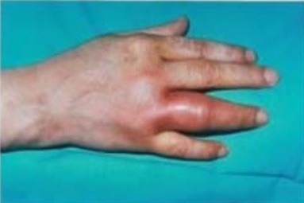

Questão 1 · Avaliação dos pacientes com monoartrite · Artrite séptica · Exames complementares · 4000120128Homem de 70 anos, internado com pneumonia bacteriana, desenvolve artrite em joelho direito. AP: DM, HAS, DLP. A principal hipótese diagnóstica e sua respectiva conduta são:
A artrite séptica; punção articular para esclarecer diagnóstico.
B gota; colchicina e anti-inflamatório.
C osteoartrite; analgesia, evitando-se uso de anti-inflamatórios.
D gota; alopurinol e corticoide.
Questão 2 · Diagnóstico · Artrite gonocócica · 4000119431Paciente de 25 anos, deu entrada com dor intensa no joelho direito e di culdade para andar devido à dor no calcanhar, refere que o quadro teve início há um dia, nega quadro similar anteriormente. Acompanhando o quadro articular, notou o aparecimento de pequenas lesões nas mãos e pés. Ao exame: dor, calor e rubor no joelho direito e temperatura corporal de 38,5º, presença de pústulas com centro necrótico nas extremidades e tendinite de Aquiles bilateral. Qual é a principal hipótese diagnóstica?
A Artrite estafilococica.
B Artrite gonocócica.
C Crise de gota.
D Artrite reativa.
Questão 3 · Avaliação dos pacientes com monoartrite · Artrite séptica · Tratamento · 4000119421Paciente masculino, 68 anos, procura o pronto-socorro com dor e aumento de volume de joelho esquerdo há 3 dias, com piora progressiva, que impede a deambulação, associado a astenia, anorexia e febre (39ºC). Há 5 anos, recebeu diagnóstico de gota por apresentar podagra a esquerda e hiperuricemia, iniciando tratamento com alopurinol. Há 2 anos, apresentou artrite aguda em joelho esquerdo que melhorou com o uso de colchicina 0,5mg 4 vezes ao dia. Na ocasião, foram observados cristais de urato de monossódio no líquido sinovial. Qual a conduta para esse paciente no pronto socorro?
A Punção articular e oxacilina 8g/dia.
B Colchicina e corticoide.
C Punção articular, ceftazima 3 g/dia.
D Punção articular, colchicina, oxacilina 8g/dia e corticoide.
Questão 4 · Avaliação dos pacientes com monoartrite · Artrite séptica · Artropatias inf ecciosas · 4000114957Homem, 38 anos, refere dor e edema em joelho esquerdo, inéditos, de início há dois dias e com progressão rápida até impedir a deambulação. Não sabe se teve febre. Nega doenças e tratamentos. Ao exame: temperatura axilar: 37,6 °C; edema, hiperemia e calor em joelho esquerdo, com sinal da tecia e aumento de volume de bolsa suprapatelar. Qual tipo celular mais contribui para o quadro clínico descrito?
A Neutrófilo.
B Fibroblasto sinovial.
C Macrófago sinovial.
D Condrócito.
Questão 5 · Tratamento · Artrite gonocócica · 4000109664Homem de 35 anos de idade procurou serviço de emergência por dor em joelho esquerdo há 1 dia. Refere febre e di culdade à deambulação pela dor. Refere episódios esporádicos de dor lombar, principalmente no m da tarde. Nega tabagismo, etilismo, uso de drogas e tem vida sexual ativa. Sem outras queixas anteriores. Ao exame: bom estado geral, corado, hidratado, temperatura 38ºC, PA 120x80mmHg, FC 100bpm, FR 24ipm, pulsos radiais palpáveis e simétricos. Joelho esquerdo com calor, edema e limitação da amplitude de movimento, sem hiperemia. Sem outras alterações do restante do exame clínico. Considerando a principal hipótese diagnóstica, qual deve ser o tratamento inicial?
A Alopurinol.
B Colchicina.
C Prednisona.
D Ceftriaxone.
Questão 6 · Avaliação dos pacientes com monoartrite · Artrite séptica · Tratamento · 4000107631Homem, 47 anos, queixa-se de dor intensa e edema em tornozelo esquerdo, com di culdade de mobilização articular, há três dias. Nunca apresentou quadro similar e nega traumatismo local. É tabagista, etilista, dislipidêmico, hipertenso e diabético. O exame físico revela artrite em tornozelo esquerdo com derrame articular. Foi realizada punção do líquido sinovial e o resultado foi: celularidade de 85 000 células, com 88% de polimorfonucleares. Culturas e pesquisa de cristais em andamento. A(s) conduta(s) adequada(s) é(são)
A prescrever anti-inflamatório não hormonal e alopurinol.
B iniciar prednisona associada ao alopurinol.
C solicitar radiografia do tornozelo e aguardar cultura e pesquisa de cristais.
D iniciar antibioticoterapia empírica.
E solicitar ultrassonografia do tornozelo para pesquisa de rotura de ligamentos.
Questão 7 · Tratamento · 4000106871Qual o tratamento de escolha para artrite gonocócica?
A Ceftriaxone.
B Penicilina benzatina.
C Amicacina.
D Vancomicina.
Questão 8 · Exames complementares · Diagnóstico · Artrite gonocócica · 4000099153Mulher, 38a, procura o Centro de Saúde com história de febre e queda do estado geral há 5 dias. Refere dor articular no período da manhã que melhora ao longo do dia, acometendo cotovelo direito, punho esquerdo e joelho direito. Há dois dias evoluiu com di culdade de etir o quarto dedo da mão direita e manchas pelo corpo. Antecedentes pessoais: atraso menstrual há duas semanas. Exame físico: T=38°C, PA=110x70 mmHg, FC=95 bpm; Membros: joelho direito: aumento da temperatura e sinal da tecla positivo. Pele e mão (ANEXO A). A BACTERIOSCOPIA ESPERADA NA ANÁLISE DA SECREÇÃO ARTICULAR É:


A Diplococus Gram negativos intra e extracelulares.
B Bacilo Gram negativo.
C Hifas septadas.
D Coco bacilo Gram negativo.
Questão 9 · Diagnóstico · Artrite gonocócica · 4000095140Paciente de 25 anos, deu entrada com dor intensa no joelho direito e di culdade para andar devido à dor no calcanhar, refere que o quadro teve início há um dia, nega quadro similar anteriormente. Acompanhando o quadro articular, notou o aparecimento de pequenas lesões nas mãos e pés. Ao exame: dor, calor e rubor no joelho direito e temperatura corporal de 38,5º, presença de pústulas com centro necrótico nas extremidades e tendinite de Aquiles bilateral. Qual a principal hipótese diagnóstica?
A Artrite estafilococica.
B Artrite gonocócica.
C Crise de gota.
D Artrite reativa.
Questão 10 · Avaliação dos pacientes com monoartrite · Artrite séptica · Tratamento · 4000086256Mulher, 42 anos, transplantada renal há 8 meses, chegou à emergência referindo Tax 37,5ºC e dor no joelho esquerdo. Há 5 dias teve um pequeno acidente doméstico: caiu no chão batendo o joelho esquerdo. Ao exame físico, encontrava-se em regular estado geral, confusa, PA 90/60 mmHg, FC 110 bpm, hipocorada, hidratada, eupneica e anictérica. O joelho esquerdo apresentava nítidos sinais ogísticos e dor intensa ao movimento. Entre outros procedimentos, a equipe de emergência solicitou coleta de exames culturais (sangue e urina), artrocentese diagnóstica e início imediato de antibiótico empírico. Em relação ao caso, afirma-se: I. A presença de 50.000 polimorfonucleares/mm³ no líquido sinovial sugere o diagnóstico de artrite séptica. II. Início imediato de antibioticoterapia e drenagem do líquido sinovial são essenciais no manejo do quadro. III. A presença de proteínas e lactato elevada no líquido sinovial são critérios maiores no diagnóstico de artrite séptica bacteriana. Estão corretas as afirmativas
A I e II, apenas.
B I e III, apenas.
C II e III, apenas.
D I, II e III.
Questão 11 · Artrite séptica · Tratamento · Exames complementares · 4000067335Sobre as “Infecções Ósteo-Articulares”, a alternativa incorreta é:
A O germe mais frequente na osteomielite é Staphylococcus aureus.
B Em adultos jovens, Neisseria gonorrhoeae é a etiologia mais comum da artrite séptica.
C A drenagem da artrite séptica é indicada na ausência de resposta à antibioticoterapia.
D A celularidade no líquido sinovial pode chegar a 250.000/microlitro, com mais de 90% de polimorfo-nuclear neutrófilos (PMNs).
E A dosagem de proteína C reativa pode auxiliar como marcador da resposta ao tratamento na osteomielite.
Questão 12 · Avaliação dos pacientes com monoartrite · Artrite séptica · Líquido Sinovial · 4000031790A.F.L.K, 63 anos, masculino, sem comorbidades prévias, iniciou com dor intensa em joelho direito, associado a eritema e importante edema. Admitido ao pronto atendimento febril (38,5º C), PA 110x60, FC 112, ritmo cardíaco regular em 2 tempos e sem sopros, sem outras alterações ao exame físico. O diagnóstico mais importante a ser avaliado por suas implicações prognósticas e a propedêutica mais indicada são?
A Gota e dosagem de uricemia.
B Doença do depósito de pirofosfato de cálcio e radiografia de joelho direito.
C Artrite Reativa e Reação de cadeia de polimerase para clamídia.
D Artrite séptica e artrocentese com análise do líquido sinovial e culturas.
Questão 13 · Artrite séptica · Exames complementares · Líquido Sinovial · 4000022821É contraindicação para a realização de artrocentese na artrite séptica:
A hiperglicemia.
B imunossupressão.
C infecção sistêmica tratada.
D trombocitopenia.
E uso de antiplaquetários.
Questão 14 · Artrite séptica · Etiologia · Artropatias inf ecciosas · 4000016925Um homem de 21 anos vai ao pronto atendimento queixando-se de dor e edema no joelho direito há 3 dias. Nega comorbidades, doenças prévias, trauma, uso regular de medicamentos ou uso de quaisquer drogas. Ao exame físico, apresenta-se alerta e orientado. Os dados vitais são PA: 120 X 74mmHg, FC: 98bpm, FR: 19ipm, SpO₂ em ar ambiente 96%, Tax: 38,4°C. O joelho direito está com o volume aumentado, apresenta calor e rubor local, além do sinal da tecla positivo. Exames de laboratório: Sangue: hemoglobina 13,1g/dL; leucócitos 17.210/mm³; neutró los segmentados 15.980/mm³; plaquetas 390.000/mm³; proteína C reativa 68mg/L. Líquido sinovial: citometria 70.450/mm³ (VR<2.000/mm³); neutró los 90%; pesquisa com coloração de Gram: sem microrganismos coráveis. Considerando o caso descrito, assinale o PRINCIPAL agente etiológico nessa condição.
A Cristais de pirofosfato de cálcio.
B Cristais de urato.
C Neisseria gonorrhoeae.
D Staphylococcus aureus.
Questão 15 · Chikungunya · Complicações · 4000124574Qual das artrites virais agudas pode mais comumente cronificar em mulheres com mais de 45 anos de idade?
A Zica vírus
B Hepatite B
C Febre chikungunya
D Hepatite C
Questão 16 · Tratamento medicamentoso · Artrite reumatoide AR · Diagnóstico · 4000122809Mulher, 40 anos, procura assistência básica por conta de poliartrite de pequenas articulações de mãos e punhos, pés e tornozelos associada à rigidez matinal acima de uma hora há seis meses, que não responde ao uso de antiin amatórios não esteroidais (AINES). Há dois meses notou aparecimento de nódulo endurecido na parte extensora do antebraço. Relata ainda perda de peso não quanti cada e estado febril vespertino. Pai falecido por Tuberculose, marido com diagnóstico de Hanseníase, e acha que prima distante tem Lúpus e outra, Tireoidopatia. Qual a sua conduta diagnóstico-terapêutica inicial?
A Artrite reumatoide – solicitar fator reumatóide e, caso negativo, anti-CCP, e RX de mãos/punhos – prescrever doses baixas de corticosteroides (CE).
B Hanseníase, forma tuberculoide – solicitar VHS e PCR – tratar doença de base e prescrever doses elevadas de CE.
C Artrite de Poncet – solicitar PCR e RX de tórax – otimizar AINES e tratar doença de base.
D Lúpus eritematoso sistêmico – solicitar FAN e Anti-DNA – prescrever doses elevadas de CE.
E Hipertireoidismo – solicitar FAN e Anti-TPO e anti-TG, TSH, T3 e T4 livre – prescrever beta-bloqueadores, propiltiouracil e doses baixas de CE.
Questão 17 · Quadro clinico · Tuberculose óssea mal de Pott · Artrite tuberculosa · 4000116188Qual sítio esquelético é mais frequentemente afetado pela tuberculose?
A Fêmur
B Coluna vertebral
C Osso ilíaco
D Escápula
E Articulações interfalangianas distais
Questão 18 · Exames complementares · Avaliação dos pacientes com monoartrite · Diagnóstico · 4000112932Homem de 22 anos apresenta quadro de dor, edema e calor em joelho esquerdo há 2 dias. A punção evidenciou um líquido turvo com 100.000 células/ml, sendo 87% de neutrófilos, sem presença de cristais. A hipótese diagnóstica mais provável é:
A Artrite gonocócica.
B Artrite gotosa.
C Artrite reumatoide.
D Osteoartrose aguda.
E Cisto de Baker roto.
Questão 19 · Diagnóstico · Artrite gonocócica · 4000112059Qual o diagnóstico mais provável em uma mulher de 25 anos com quadro de tenossinovite com rubor em dorso do punho esquerdo e artralgia migratória há 3 dias?
A Febre reumática
B Doença de Reiter
C Tenossinovite gonocóccica
D Tenossinovite por cristais de hidroxiapatita
Questão 20 · Diagnóstico · Chikungunya · Chikungunya · 4000107863Mulher, 30 anos, procura atendimento após período de férias de quinze dias em Recife (PE). Refere febre (até 39,0°C) com dois episódios diários há sete dias, além de mialgia em dorso e membros e dor, edema e rigidez persistente em articulações das mãos, punhos e cotovelos. Exame físico: regular estado geral; artrite em cotovelos, punhos, metacarpofalangianas e interfalangianas proximais de ambas as mãos; máculas eritematosas numulares em tronco. Qual é o exame mais indicado para elucidação diagnóstica?
A Ultrassonografia com Doppler das mãos.
B Radiografia simples das mãos.
C Quantificação de IgM específica.
D Pesquisa de anticorpo antipeptídeo citrulinado cíclico.
Questão 21 · Etiologia · Quadro clinico · Artrite gonocócica · 4000097855Adolescente, 13a, com história de febre há 3 dias, associada a exantema generalizado, artralgia em mãos e edema em joelho esquerdo, com di culdade para deambulação. O jovem referiu que há duas semanas apresentara quadro de disúria e secreção em pênis, para o qual não buscou auxílio médico. A BACILOSCOPIA DO LÍQUIDO SINOVIAL EVIDENCIARÁ:
A Bacilo gram-negativo.
B Bacilo álcool-ácido resistente.
C Diplococo gram-negativo.
D Cocobacilo gram-positivo.
Questão 22 · Chikungunya · 4000080875Mulher de 23 anos. Poliartrite simétrica de pequenas e grandes articulações de início súbito evoluindo há 7 dias, acompanhada de febre de 39 graus Celsius e erupção cutânea morbiliforme envolvendo tronco e membros com leve prurido. É vendedora ambulante na feira Manaus Moderna, G1P1A0. Ao exame físico, bom estado geral deambulando, eupneica, corada, tórax e abdome sem anormalidades. Há aumento de volume, dor, rubor e calor em interfalangeanas proximais, metacarpofalangeanas, punhos, joelhos e tornozelos. Qual é a hipótese diagnóstica inicial para a paciente?
A Artrite reumatoide.
B Chikungunya.
C Poliangeite granulomatosa.
D Lúpus eritematoso sistêmico.
Questão 23 · Tratamento · 4000077884Homem de 30 anos com dor, aumento de volume e rubor em joelho direito. Aspirado revelou numerosos leucócitos e polimorfonucleares, sem microrganismos ao gram, com alguns cristais birrefringentes. O melhor tratamento inicial é:
A Antibiótico venoso.
B Colchicina oral.
C Corticosteroide intra-articular.
D Corticosteroide oral.
E Analgesia.
Questão 24 · Tratamento · 4000077871Adaptada - Estudante de 18 anos, feminina, sem antecedentes, procura atendimento com dor em punho esquerdo e tornozelo direito acompanhados de febre e erupção cutânea pustular em superfície de antebraços. Apresenta discreto calor e rubor em tornozelo e dor à exão passiva do punho. Menos de 1ml foi aspirado de seu tornozelo e mostrou 8 mil polimorfonucleares por campo, sem germes ao gram. O melhor tratamento para esta condição é:
A Indometacina oral.
B Ceftriaxone
C Colchicina oral.
D Prednisona intra-articular.
E Ampicilina venosa.
Questão 25 · Características gerais · Zika · Chikungunya · 4000077714Paciente de 12 anos de idade, previamente hígido, após excursão em área de mata para acampamento de escoteirismo, apresenta febre intensa, três dias de evolução, prurido cutâneo leve, poliartrite, com edema de mãos e pés, mialgia e exantema inespecífico. Com base nos dados citados, o diagnóstico mais provável e a evolução possível são:
A Zika e evolução para cronicidade.
B Dengue com evolução para dengue hemorrágica.
C Chikungunya e evolução para cronicidade.
D Zika sem risco de evolução para cronicidade.
E Chikungunya com risco de hemoconcentração.
Questão 26 · Gota · 4000066869Homem, 50 anos, previamente hígido, acorda subitamente às 4:00 horas com dor aguda, edema, vermelhidão de tornozelo direito, sem fator desencadeante e sem trauma. Procura PS. Não tem febre, pressão arterial, pulso e saturação de oxigênio normais. Relata ser a primeira vez que apresenta este quadro. No exame físico, apresenta monoartrite aguda de tornozelo direito. Não apresenta lesões em região genital. No hemograma apresenta hemoglobina de 16,2 mg/dL, leucócitos de 5400 com neutrófilos 10% (6% de bastonetes de 94% de segmentados). Qual é o diagnóstico mais aproximado?
A Artrite séptica.
B Anemia falciforme.
C Osteoartrite.
D Artrite gotosa.
Questão 27 · Artrite reativa · 4000042948Homem, 25 anos, queixa-se de dor articular em joelho direito, além de articulação metatarsofalangena do hállux esquerdo, sem história de trauma, de início há 5 semanas. A rma ser previamente hígido e relata apenas um quadro de disúria com melhora espontânea há algumas semanas. Ao exame, discreta hiperemia ocular, sinais inflamatórios nas articulações acometidas, sem presença de deformidades. A principal hipótese diagnóstica e exame a ser solicitado para esse caso seria:
A artrite reumatoide, fator reumatóide.
B artrite reacional, análise do líquido sinovial.
C artrite séptica, punção articular.
D osteoartrose, radiografia.
Questão 28 · Etiologia · 4000027120Dentre os agentes infecciosos abaixo, qual é o principal causador da artrite infecciosa em adultos?
A Staphylococcus aureus.
B Aspergillus spp.
C Escherichia coli.
D Streptococcus pneumoniae.
Questão 29 · Avaliação dos pacientes com monoartrite · 4000023549Paciente de 35 anos, sexo masculino, previamente hígido, com quadro de monoartrite, de joelho a esclarecer. Feita a artrocentese com o seguinte resultado: aparência xantrocômica, 1400 leucócitos, 10% polimorfonucleares, glicose 95, cristais ausentes. Glicemia capilar: 102. Esse quadro sugere qual diagnóstico?
A Artrite séptica.
B Traumatismo.
C Pseudogota.
D Artite reumatoide.
E Osteoartrite.
Questão 30 · Quadro clinico · 4000103218Dentre as alternativas abaixo, qual está CORRETA sobre a artrite séptica?
A Ocorre principalmente em articulações do membro inferior.
B O desenvolvimento para osteoartrose é raro.
C Acomete principalmente homens de meia-idade.
D Antibioticoterapia é o tratamento inicial de escolha.
Questão 31 · Quadro clinico · Artrite tuberculosa · 4000101538O mal de Pott acomete mais frequentemente qual segmento da coluna?
A Coluna cervical.
B Transição lombossacra
C Transição cervicotorácica.
D Transição toracolombar.
Questão 32 · Manif estações clínicas · Diagnóstico · Artrite reativa · 4000127956Homem de 30 anos, queixando-se de ardência uretal, olhos vermelhos com ardência e lacrimejamento e sinais de poliartrite. Qual o diagnóstico clínico?
A Síndrome de Sjogreen
B Espondilite anquilosante
C Síndrome de Reiter
D Gonococcia
Questão 33 · Tratamento · Artrite gonocócica · 4000117717Mulher 24 anos, com quadro há 03 semanas de febre baixa, adinamia, anorexia e artrite com dor moderada em joelho direito e tornozelo esquerdo. Ao exame, presença de pápulas com centro vesicular necrótico em dorso da mão direita. O tratamento desta condição deverá ser feito preferencialmente com:
A Prednisona em baixas doses.
B Metilprednisolona em pulsoterapia.
C Indometacina.
D Ceftriaxona.
E Vancomicina.
Questão 34 · Tratamento · Artrite gonocócica · 4000106188Mulher de 30 anos de idade procura ambulatório com queixa de dor em punho direito e joelho esquerdo há 1 dia. Ao exame clínico: edema e eritema em punho direito e joelho esquerdo, com lesão pustulosa em antebraço esquerdo. Aspirado de líquido sinovial do joelho (1 ml) revelou 10.000 células com 90% de polimorfonucleares, sem microorganismos à coloração de Gram e cultura negativa. A conduta para esta paciente é:
A Alopurinol
B Ceftriaxona
C Indometacina
D Clindamicina
Questão 35 · Diagnóstico · Artrite gonocócica · 4000054237Estivador de 32 anos com um quadro de artrite em joelho esquerdo há 2 dias, refere que há 10 dias apresentou um quadro de poliartralgia migratória assimétrica, mialgia, exantema e febre, com melhorara nos três últimos dias. O diagnóstico mais provável deste paciente é:
A Artrite reumatoide.
B Artrite gonocócica.
C Espondilite anquilosante.
D Artrite gotosa.
E Lupus eritematoso sistêmico.
Questão 36 · Exames complementares · 4000112261O estudo do líquido sinovial de um paciente com artrite séptica revela: Respostas: 1 12 23 34
A Baixa celularidade, aspecto turvo e viscosidade aumentada.
B Baixa celularidade, aspecto turvo e viscosidade reduzida.
C Alta celularidade, aspecto turvo e predomínio de polimorfonucleares.
D Alta celularidade, aspecto opaco e predomínio de linfomononucleares.
E Alta celularidade, aspecto translúcido e viscosidade reduzida.